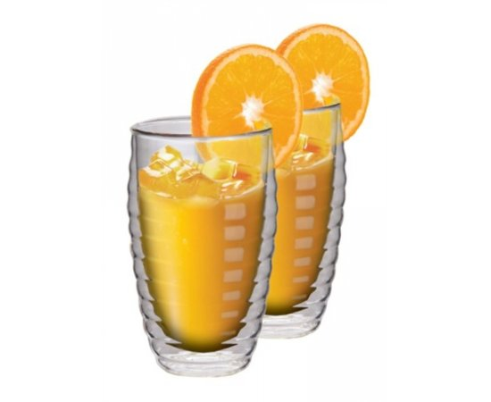
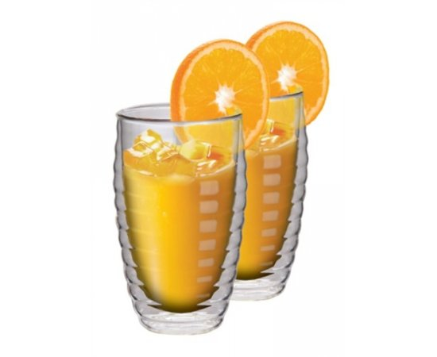
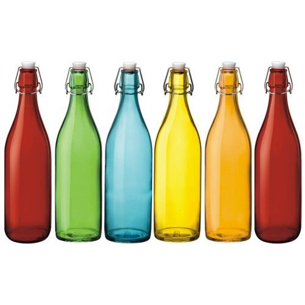
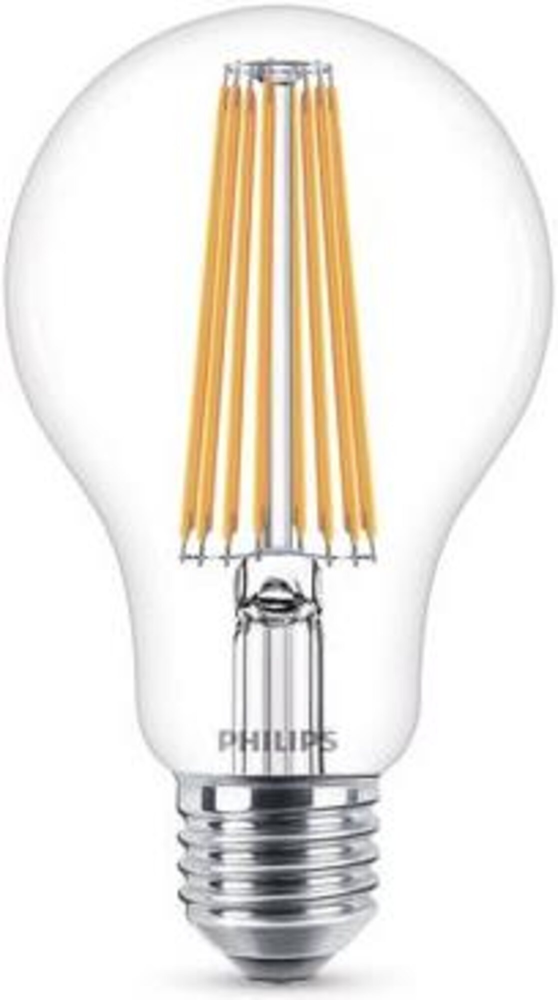
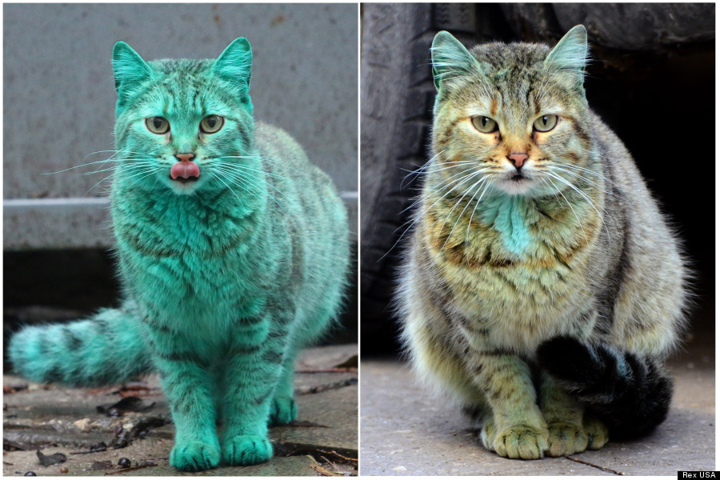

Zaba pila pomarancovy dzus z pohara.
 

A ten pomarancovy dzus bol z farebnych flias.
A svietila si na to ziaravkou od firmy Phillips.
A hrala k tomu na klaviri.
A potom stretla zelenu macku.
A spytala sa: "Preco si zelena?"
Zelena macka povedala: "Uz som sa tak narodila. Neviem preco. Ale dazd to pomaly mi zmyl."